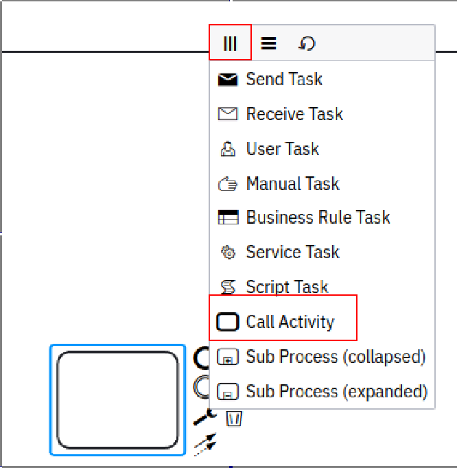
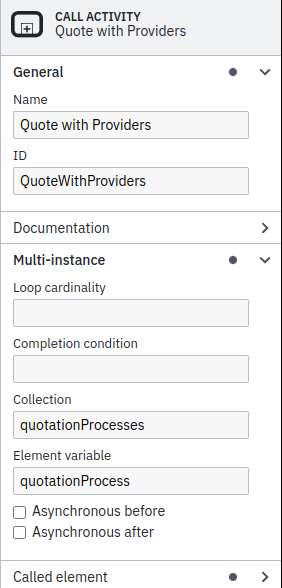
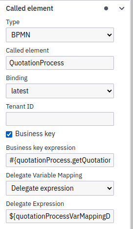
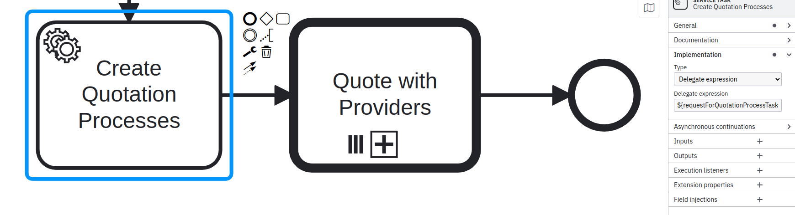
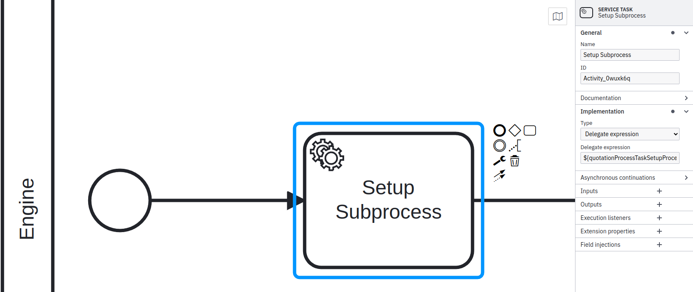

Subprocess
Working with subprocess
A sub-process is a means of entering a flow of an alternate process during the execution of the main process.
To better understand how the creation of a subprocess is performed, the example of a quotation application will be used.
Let’s do a example
The first thing we will do is create a task and define it as a sub-process by selecting Call Activity and Parallel Multi-Instance as shown in the red underline in the image below:

After the task created, you must define a name and id in General, in the multi-instance tab we will inform that the subprocess will receive a Collection of elements called quotationProcesses, referring to a List containing all the suppliers available to quotation and in Element Variable will be set to the name of quotationProcess that refers to each instance of quotationProcesses.

On the Called Element tab, some things will be defined such as:
Type: BPMN
Called Element: quotationProcess
Also select the Bussines Key checkbox with this the Bussines Key Expression field will be enabled where we will define #{quotationProcess.getQuotation().number} this being the business key created for the quote.

Then create a Java Delegate class with the name quotationProcessVarMappingDelegate that implements the DelegateVariableMapping interface, this is necessary because we need to change the ProcessEntity reference from RequestForQuotationProcess to QuotationProcess, when this exchange of reference is performed on the ProcessEntity, the QuotationProcess also receives a reference to RequestForQuotationProcess so that the reference of the previous process is not lost.
@Component
public class QuotationProcessVarMappingDelegate implements DelegateVariableMapping {
@Override
public void mapInputVariables(DelegateExecution delegateExecution, VariableMap variableMap) {
variableMap.putValue(
RequestForQuotationProcessConstants.REQUEST_FOR_QUOTATION_PROCESS,
delegateExecution.getVariable(CamundaConstants.PROCESS_ENTITY)
);
variableMap.putValue(CamundaConstants.PROCESS_ENTITY, delegateExecution.getVariable(QuotationProcessConstants.QUOTATION_PROCESS));
}
@Override
public void mapOutputVariables(DelegateExecution delegateExecution, VariableScope variableScope) {}
}
After we prepare our subprocess, we will create a Service Task with the name Create Quotation Processes implementing the Delegate Expression requestForQuotationProcessTaskCreateQuotationProcessesDelegate.

Create a Java Delegate interface with the same name of Delegate Expression, being responsible for preparing the list of subprocesses and instantiating the quotationProcess information for the subprocess..
@Component
public class RequestForQuotationProcessTaskCreateQuotationProcessesDelegate implements JavaDelegate {
@Autowired
private RequestForQuotationProcessRepository requestForQuotationProcessRepository;
@Autowired
private RequestForQuotationRepository requestForQuotationRepository;
@Autowired
private ProviderMapper providerMapper;
@Autowired
private QuotationProcessMapper quotationProcessMapper;
@Autowired
private QuotationProcessRepository quotationProcessRepository;
@Override
public void execute(DelegateExecution delegateExecution) throws Exception {
RequestForQuotationProcessDTO requestForQuotationProcessDTO = (RequestForQuotationProcessDTO) delegateExecution.getVariable(
CamundaConstants.PROCESS_ENTITY
);
RequestForQuotationProcess requestForQuotationProcess = requestForQuotationProcessRepository
.findById(requestForQuotationProcessDTO.getId())
.orElseThrow();
updatedRequestForQuotationStatus(requestForQuotationProcess.getRequestForQuotation());
List<QuotationProcessDTO> quotationProcesses = createQuotationProcesses(
(List<ProviderDTO>) delegateExecution.getVariable(RequestForQuotationProcessConstants.PROVIDERS),
requestForQuotationProcess
);
delegateExecution.setVariable(RequestForQuotationProcessConstants.QUOTATION_PROCESSES, quotationProcesses);
}
private void updatedRequestForQuotationStatus(RequestForQuotation requestForQuotation) {
requestForQuotationRepository.updateStatusById(StatusRFQ.QUOTING, requestForQuotation.getId());
}
private List<QuotationProcessDTO> createQuotationProcesses(
List<ProviderDTO> providers,
RequestForQuotationProcess requestForQuotationProcess
) {
List<QuotationProcessDTO> quotationProcesses = new ArrayList<>();
int index = 1;
for (ProviderDTO provider : providers) {
quotationProcesses.add(createQuotationProcess(requestForQuotationProcess, providerMapper.toEntity(provider), index++));
}
return quotationProcesses;
}
private QuotationProcessDTO createQuotationProcess(
RequestForQuotationProcess requestForQuotationProcess,
Provider provider,
int index
) {
QuotationProcess quotationProcess = new QuotationProcess();
quotationProcess.setQuotation(new Quotation());
quotationProcess.getQuotation().setRequestForQuotation(requestForQuotationProcess.getRequestForQuotation());
quotationProcess.getQuotation().setStatusQuotation(StatusQuotation.QUOTING);
quotationProcess.getQuotation().setProvider(provider);
quotationProcess.getQuotation().setItem(requestForQuotationProcess.getRequestForQuotation().getItem());
quotationProcess.getQuotation().setNumber(requestForQuotationProcess.getRequestForQuotation().getNumber() + "." + index);
return quotationProcessMapper.toDto(quotationProcessRepository.save(quotationProcess));
}
}
Finally, inside the BPMN of the subprocess, create a service task with the name of Setup Subprocess and in the implementation tab define:
Type: Delegate Expression
Delegate Expression: quotationProcessTaskSetupProcessDelegate

After that create a Java Delegate class with the same name defined in Delegate Expression that implements the JavaDelegate interface, this part is necessary to instantiate the ProcessInstance so that there are no problems when executing the subprocess.
@Component
public class QuotationProcessTaskSetupProcessDelegate implements JavaDelegate {
@Autowired
private ProcessDefinitionRepository processDefinitionRepository;
@Autowired
private ProcessDeploymentRepository processDeploymentRepository;
@Autowired
private ProcessInstanceRepository processInstanceRepository;
@Autowired
private QuotationProcessRepository quotationProcessRepository;
@Autowired
private RuntimeService runtimeService;
@Autowired
private QuotationProcessMapper quotationProcessMapper;
@Override
public void execute(DelegateExecution delegateExecution) throws Exception {
QuotationProcessDTO quotationProcessDTO = (QuotationProcessDTO) delegateExecution.getVariable(CamundaConstants.PROCESS_ENTITY);
ProcessDefinition processDefinition = processDefinitionRepository
.findByBpmnProcessDefinitionId(QuotationProcessConstants.QUOTATION_PROCESS_BPMN_ID)
.orElseThrow();
ProcessDeployment processDeployment = processDeploymentRepository
.findByProcessDefinitionIdAndStatusIsActiveAndTenantIsNull(processDefinition.getId())
.orElseThrow();
ProcessInstance processInstance = new ProcessInstance();
processInstance.setProcessDefinition(processDefinition);
processInstance.setCamundaProcessDefinitionId(processDeployment.getCamundaProcessDefinitionId());
processInstance.setCamundaDeploymentId(processDeployment.getCamundaDeploymentId());
processInstance.setProps(processDeployment.getProps());
processInstance.setStartDate(LocalDateTime.now());
processInstance.setUsername(SecurityUtils.getCurrentUserLogin().orElseThrow());
processInstance.setStatus(StatusProcessInstance.RUNNING);
processInstance.setBusinessKey(delegateExecution.getBusinessKey());
processInstance.setCamundaProcessInstanceId(delegateExecution.getProcessInstanceId());
ProcessInstance processInstanceSaved = processInstanceRepository.save(processInstance);
QuotationProcess quotationProcess = quotationProcessRepository.findById(quotationProcessDTO.getId()).orElseThrow();
quotationProcess.setProcessInstance(processInstanceSaved);
runtimeService.setVariable(
quotationProcess.getProcessInstance().getCamundaProcessInstanceId(),
CamundaConstants.PROCESS_ENTITY,
quotationProcessMapper.toDto(quotationProcess)
);
}
}
Congratulations, you’ve just create a subprocess!
Now if necessary make changes to solve your problem.